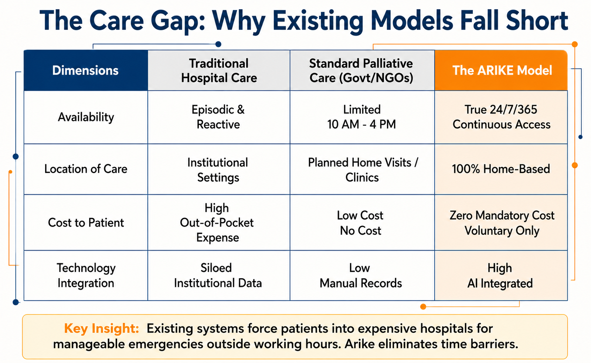
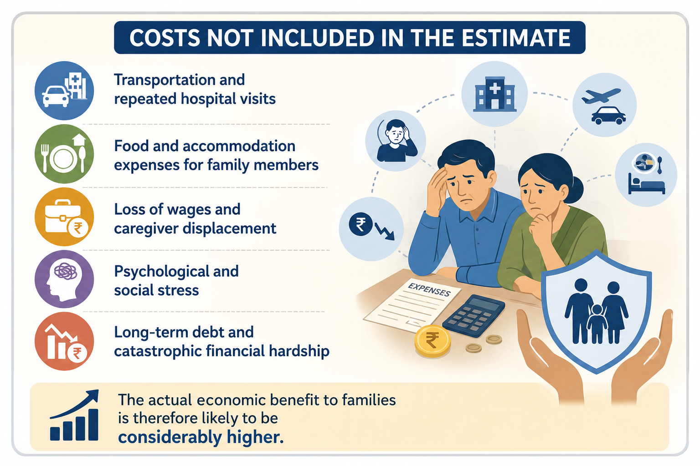

A scalable model for compassionate end-of-life care
What it would take to cover a district.
With ₹2.52 crore, Arike delivered comprehensive home-based palliative care across Ernakulam in 2025 - at a fraction of the cost of hospital care.
The value it creates
₹13.01Cr
in direct costs saved by caring for patients at home rather than in hospital.
244 patients × 10 days × ₹53,333/day
Beyond direct savings, families avoid travel, food and lodging, lost caregiver income, and long-term debt - so the true benefit is far greater.
What hospitalisation costs
For terminally ill patients, admission places a severe financial burden on families. Average private-hospital expenses run:
- ₹5,000-15,000Regular inpatient care, per day
- ₹10,000-25,000ICU observation, per day
- ₹50,000-1,00,000ICU + ventilator, per day
By caring for patients at home, Arike spares families these daily costs - the basis for the conservative estimate alongside.
To cover a district like Ernakulam
~25
Arike-like units
→
₹62Cr
a year
→
100%
of the district covered

How ₹13.01 crore in avoided healthcare costs was estimated.

The savings families never see on a bill.
Estimated Economic Impact19